↺
↻
グリッド
メジャー
背景
−
100%
＋
⟨
⟩
ツール
カラー
フレーム/レイヤー
設定
ツール
範囲選択
ペン
消しゴム
図形
塗りつぶし
ペン
スポイト
消しゴム
直線
曲線
四角
塗り四角
丸
塗り丸
塗りつぶし
矩形選択
投げ縄

同色
ブラシサイズ
1px
不透明度
100%
カラー
モード
インデックス
RGB
パレット
＋ 追加
インデックス
色
R
G
B
A
色
R
G
B
A
フレーム & レイヤー
レイヤー
フレーム
レイヤー
＋
－
フレーム
＋
－
再生
▶
fps
設定
キャンバスサイズ
横
縦
ズーム
背景
16px グレーチェック
ガイド
1px ガイド
新規作成
ファイルを開く
キャンバスをクリア
ローカルに自動保存
新規プロジェクト
ファイル名
キャンバスサイズ
横
縦